0
API keys to analyse a job.
Reading postings, the coverage score, the writing checks, every template and the PDF work without one.
Dossierbuild aims your resume at every job you apply for, and checks every AI rewrite against your own history. It can sharpen a line, and if it slips in a number or a tool you don't have, it says so.
Backend engineer, four years on Python data platforms. Happiest owning a thing end to end, from the Postgres schema to the dashboard the team actually reads.
Illustration built from the worked example that ships with the app. The 73% is what the app scores it against the posting in the demo video.
Import it from a LinkedIn export, a PDF, a DOCX or pasted text, or start from the worked example.
Backend Engineer, Data Platform
PDF · words and design together, against the posting it went to.
An illustration on the worked example that ships with the app. The rewrites shown are examples of what the check does.
The analysis, the writing checks, the templates and the PDF all run on your machine without an AI key. A Gemini or Claude key adds import parsing, rewrites and line drafting.
A posting is read by rules into weighted requirements and scored against your profile, before any rewriting starts.
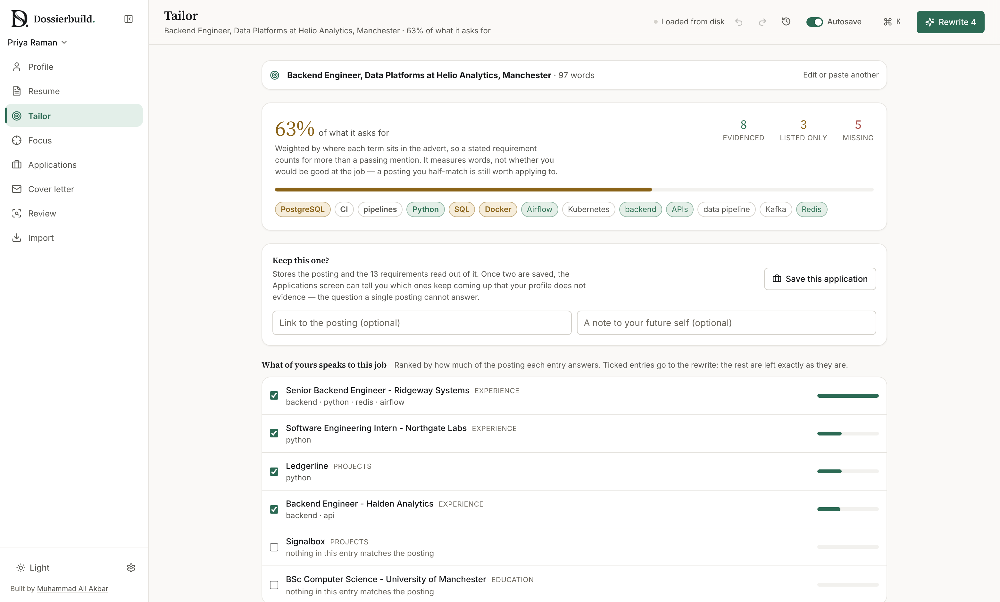
Every AI suggestion is diffed against the line it came from. A number, tool or employer your profile doesn't contain arrives flagged and unticked, whichever provider wrote it.
Reading postings, the coverage score, the writing checks, every template and the PDF work without one.
The preview is the printed PDF. Export to PDF, self-contained HTML or plain text.
Review reads the whole document, flags filler and vague claims, and points to the line worth fixing first. The same check scores the AI's rewrites.
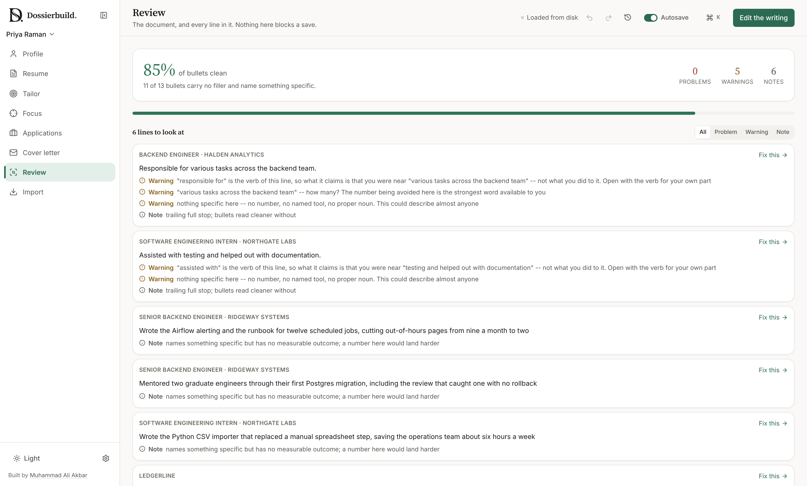
Each application's stage, the exact version you sent, and the requirements you keep missing across all of them.
Letters drafted from what your profile can evidence. Briefs listing what you can and can't back up, and the questions each invites.
Separate CVs for different careers, focus tags for job families, saved versions and full undo.
Your profile, portrait, saved versions and API key live locally. The only thing that leaves is text you choose to send to the AI provider you picked: Gemini or Claude.
Page one of each, rendered by the app itself from the worked example, each in one of its built-in looks. ATS-safe templates keep to one column, so an application portal reads them in the order they were written; a two-column page is best sent straight to a person.
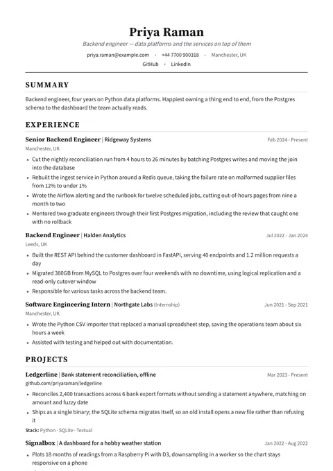
Classic ATS-safeCentred header, ruled section headings, serif throughout.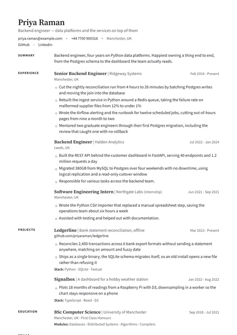
Minimalist ATS-safeDates in a left gutter, no rules, generous air.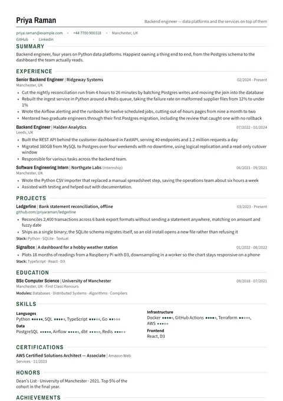
Compact ATS-safeTight leading and paired skill columns, for fitting a lot on one page.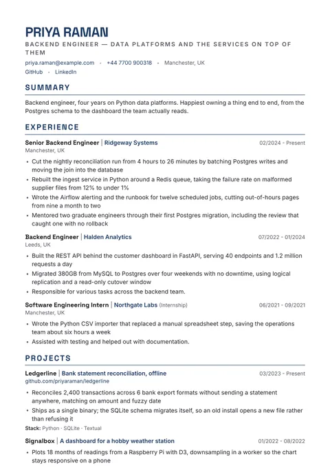
Executive ATS-safeName set large in the accent, ruled headings, skills in a grid.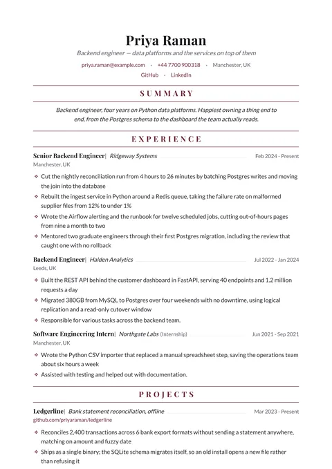
Gazette ATS-safeCentred masthead, banded headings, dotted leaders to the dates.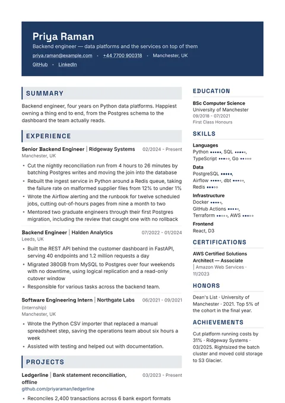
Modern Two-columnAccent header band with a side column for contact, skills and study.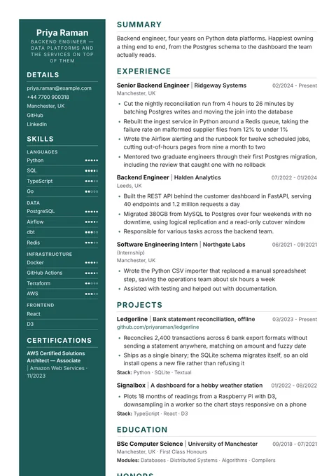
Sidebar Two-columnFull-height accent column carrying the portrait, contact and skills.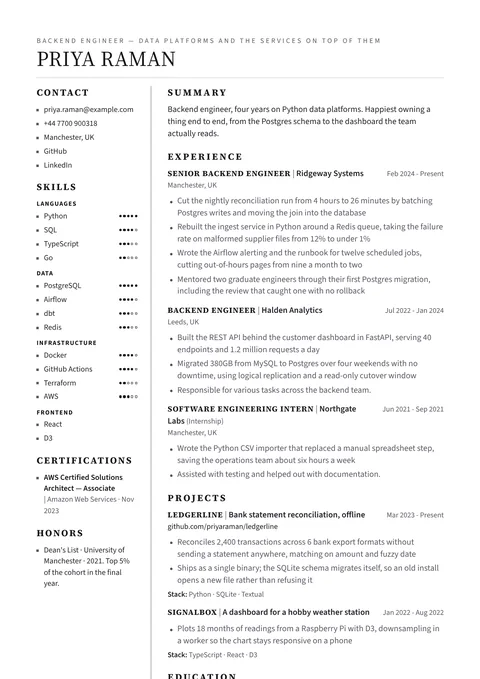
Boardroom Two-columnName set large over a rule, two columns divided by a hairline, no colour.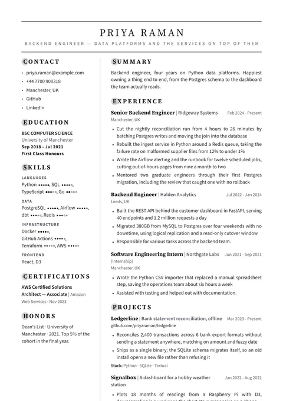
Atelier Two-columnTracked name between two rules, even columns, a disc behind each heading.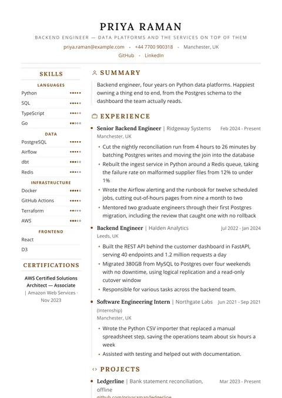
Editorial Two-columnCentred portrait, small-caps side column, entries on a dotted rail.The next column is a plan, not a promise.
Yes. It's open source under the MIT license. You download it from GitHub and run it yourself.
Not to get started. Reading job postings, scoring your profile, the writing checks, every template and the PDF all work without one. An AI key is optional: a Gemini key or a Claude key adds three things, parsing an imported resume, rewriting bullets for a posting, and drafting a line on request. Every rewrite goes through the same check against your profile, whichever you use.
It can try, which is why every rewrite is diffed against the line it came from. A number, tool or employer that isn't already in your profile is flagged, and flagged suggestions arrive unticked. Words lifted from the job advert don't count as known.
It catches numbers and named technologies a rewrite added. It's a diff against your profile, not a fact-checker, so it can't tell you whether something already in your profile is true. That part stays your job.
It stays with you. Your profile, portrait, saved versions and API key live on your own machine. The only thing that leaves is text you explicitly send to the model.
One Docker command, at the top of the GitHub README, or the README's steps to run it with Python. Either way it opens in your browser at localhost.
Most AI resume tools hand your history and a job advert to a model and print whatever comes back. It's fast, and it's how a resume ends up claiming a tool you've never used.
I wanted the opposite: the job read by rules, the AI only allowed to rewrite, and every rewrite checked against what you've actually done. Dossierbuild is that tool. It runs on your own machine, it's open source, and its limits are written down in the README.
Questions, bugs or partnerships: aliakbar@dossierbuild.lol
Free, open source, and yours to run. Start with one profile and aim it at every job you want.